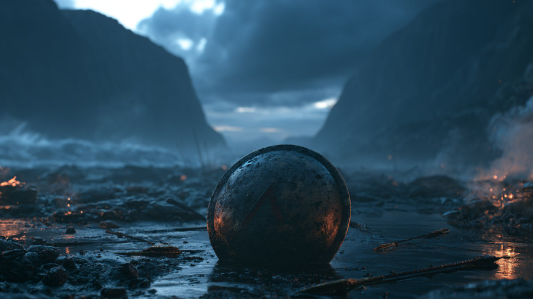

Sparta
Fırtınalı bir kıyı geçidinde Spartalı hoplitler ile Pers seçkin savaşçılarının karşılaşması. Kalkan duvarı, ateşli ok yağmuru ve dalgaların içinde teke tek düello; karakter tasarımından mekâna, sekanslardan 110 saniyelik final kurguya kadar kendi ürettiğim bir AI kısa filmi.
- Final
- 110 sn · 16:9
- Araç
- Seedance 2.0 · Dreamina
- Yıl
- 2026